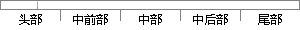

具体的工作模式如下表2-1所示。
片段位置图

相似结果
相似片段：这种编码方式的具体频率值如下表 2-1所示。 表2-1 DTMF信号传输频率表 Table...以实现与微处理器直接接口和便于对电路进行工作模式控制,获得更好的功能和灵活性...
| 标题 | 《智能住宅中电器的节能控制算法的研究》 |
| 对比库 | 中国学位论文全文数据库 |
| 作者 | 刘志敏 |
| 机构 | 哈尔滨工业大学 |
| 分类 | 电力电子与电力传动 |
| 年份 | 2006 |
| 相似率 | 100% （严重抄袭） |
※ 片段修改建议 ※
近似词参考：- 具体：详细
- 工作：事情
系统自动生成语句：详细的事情模式如下表2-1所示。
注：本片段修改建议为系统自动生成，仅供参考。